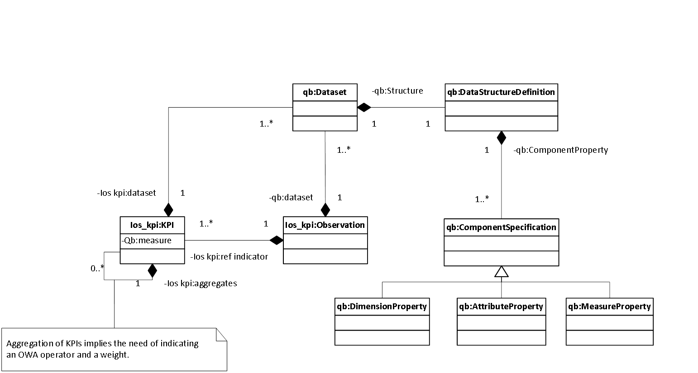
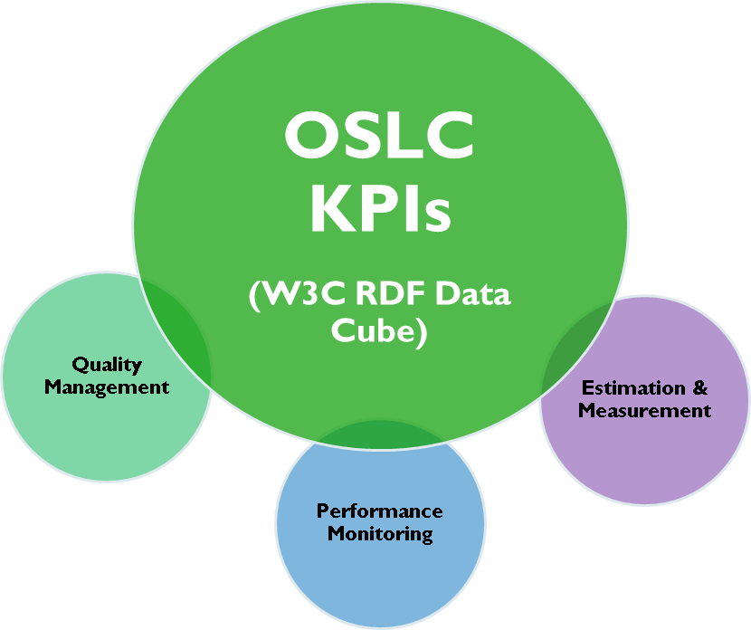

This family of documents defines the Open Services for Lifecycle Collaboration Key Performance Indicators Management and Definition specification, also known as OSLC KPI. These documents collectively define the OSLC KPI 1.0 specification. This specification supports key REST APIs for Key Performance Indicator systems. OSLC KPI 1.0 takes an open, loosely coupled approach to specific lifecycle integration scenarios. The scenarios and this V1.0 specification were created by the Knowledge Reuse Group (UC3M) and The Reuse Company (TRC).
This specification builds on the Open Services for Lifecycle Collaboration (OSLC) Core v2.0 Specification to define the resources, properties and operations supported by an OSLC Requirements Definition and Management (OSLC-RM) provider.
Key Performance Indicator resources include Indicators, Indicators Collection, Observations and supporting resources defined in the OSLC Core specification. The properties defined describe these resources and the relationships between resources. Operations are defined in terms of HTTP methods and MIME type handling. The resources, properties and operations defined do not form a comprehensive interface to Key Performance Indicator Definition and Management, but instead target specific integration use cases.
NotationThe key words “MUST”, “MUST NOT”, “REQUIRED”, “SHALL”, “SHALL NOT”, “SHOULD”, “SHOULD NOT”, “RECOMMENDED”, “MAY”, and “OPTIONAL” in this document are to be interpreted as described in RFC2119. Domain name examples use RFC2606.
This document defines a Key Performance Indicators Specification. It is based on existing Open Services for Lifecycle Collaboration (OSLC) documents following a similar structure and reusing some of the common contents.
This document has also followed the guidelines by W3C and its tool Respec to provide a common visual format to other existing specifications.
If you wish to make comments regarding this document, please send them to this repository. All comments are welcome.
This is a draft document and may be updated, replaced or obsoleted by other documents at any time. It is inappropriate to cite this document as other than work in progress.
Public and private bodies are continuously seeking new analytical tools and methods to assess some policy, change, specification, quality, etc. and to support their decisions. Nevertheless the sheer mass of data now available is raising a new dynamic and challenging environment in which traditional tools are facing major problems to deal with data-sources diversity, structural issues or complex processes of estimation. New paradigms and tools are required to take advantage of the existing data-based environment to design and estimate actions in this dynamic context according to needs of transparency, standardization, adaptability and extensibility among others with the aim of providing new context-aware and added-value services that can help a deepen and broaden understanding of the impact of a policy (or a requirement change) in a more fast and efficient way. As a consequence common features can be extracted from the existing situation:
Obviously semantic-based technologies, as underlying concepts of the OSLC initiative, can partially address this challenging environment for supporting new quality-checking strategies. A common and shared data model based on existing standardized semantic web vocabularies and datasets can be used to represent indicators, unit metrics, or observations from both, structural and computational, points of view enabling a right exploitation of meta-data and semantics. That is why the present section introduces: a high-level model on top of the RDF Data Cube Vocabulary, a shared effort to model statistical data in RDF reusing parts (the cube model) of the Statistical Data and Metadata Exchange Vocabulary (SDMX), to represent the structure and computation (if needed) of indicators and observations.
Essentially a quantitative index or just a set of KPIs (without any underlying structured) is comprised of several components. In the same way, a component can also be composed of the aggregation of indicators that keep concrete observations. From this initial definition some characteristics and assumptions can be found:
According to the aforementioned characteristics and assumptions an observable element (index, component or indicator) comprises a dataset of observations under a specific context (dimensions and/or meta-data) that can be directly gathered from external sources or computed by some kind of OWA (Ordered Weighted Averaging) operator.
As a necessary condition for the computation process, an aggregated dataset aq defined by means of the set of dimensions D_aq can be computed iif ∀ q_j ∈ Q: D_aq ⊆ D_qj. Furthermore the OWA operator p can only aggregate values belonging to the same measure m. As a consequence of the aforementioned definitions some remarks must be outlined in order to restrict the understanding of a quantitative index (structure and computation):
Building on the aforementioned definitions, it is possible to describe a set of key performance indicators, observations, indicators composition and structure. In this light, a direct translation built on the top of the RDF Data Cube Vocabulary (represented using the prefix qb), SDMX and other semantic web vocabularies is presented in the next table. Thus, all concepts are described reusing existing definitions, taking advantage of previous efforts and pre-established semantics with the aim of being extended in the future to fit new context.
| Concept | Shape Element | Comments |
|---|---|---|
| Observation o | qb:Observation |
Instance of the class qb:Observation to collect values and their context |
| Numerical value v | xsd:double |
Restriction to numerical values |
| Measure m | qb:MeasureProperty and sdmx-measure:obsValue |
Restriction to one measure if an index is designed. Otherwise a set of measures can be used |
| Status s | sdmx-concept:obsStatus |
Defined by the SDMX-RDF vocabulary |
| Dataset q | qb:dataset and qb:DataStructureDefinition |
Metadata of the qb:Dataset |
| Dimension d_i ∈ D | qb:DimensionProperty |
Context of observations |
| Annotation a_i ∈ A | owl:AnnotationProperty |
Intensive use of Dublin Core |
| Attribute at_i ∈ T | qb:AttributeProperty |
Link to existing datasets such as DBPedia |
| OWA operator p | SPARQL 1.1 aggregation operators | Other extensions depend on the RDF repository or RDF service |
| Index, Indicator and Component | skos:Concept |
SKOS taxonomy (logical structure if a hierarchy is used) |
This approach is focused on publishing of statistical values without paying special attention to what type of indicators and observations are going to be generated. Thus, two major resources are defined, KPI and Observation, to create new constructors or primitives on top of the RDF Data Cube Vocabulary, see Figure 1.

Figure 1: Overview of the data model to represent KPIs and observations.
The main advantage of this approach lies on the separation of dimensions and attributes between indicators and observations. Obviously both can contain particular metaproperties (attributes) but main and common characteristics (dimensions and attributes) of all observations are refactored in the indicator structure. Besides, some positive side effects of this approach lies on the possibility of easing the versioning and tracking of observations on the same indicator. For instance, observations can be easily sliced by a dimension or an attribute. In the case of requirements quality, a dimension can be a project, an indicator, etc.
However, the main drawback of this approach is that is not closed (an intrinsic RDF characteristic), new dimensions or/and attributes could be automatically generated by third-party tools. That is why, it is completely necessary to merge the advantages of this approach with the existing OSLC specifications about “Performance Monitoring” and “Estimation and Measurement” that provide a closed shape for publishing metrics and observations.
| Requirement | Level | Meaning |
|---|---|---|
| Unknown properties and content | MAY / MUST | OSLC services MAY ignore unknown content and OSLC clients MUST preserve unknown content |
| Resource Operations | MUST | OSLC service MUST support resource operations via standard HTTP operations |
| Resource Paging | MAY | OSLC services MAY provide paging for resources but only when specifically requested by service consumer |
| Partial Resource Representations | MUST / MAY | OSLC services MUST support request for a subset of a resource's properties via the oslc.properties URL parameter retrieval via HTTP GET and MAY support via HTTP PUT |
| Partial Update | MAY | OSLC services MAY support partial update of resources using patch semantics |
| Service Provider Resources | MAY / MUST | OSLC service providers MAY provide a Service Provider Catalog and MUST provide a Service Provider resource |
| Creation Factories | MUST / MAY | OSLC service providers MUST provide at least one creation factory resource for concepts, relationships, metaproperties, semantics and artifacts and MAY provide creation factory resources for collections of the aforemetnioned resources |
| Query Capabilities | MUST | OSLC service providers MUST provide query capabilities to enable clients to query for resources |
| Query Syntax | MUST | OSLC query capabilities MUST support the OSLC Core Query Syntax |
| Delegated UI Dialogs | MUST | OSLC Services MUST offer delegated UI dialogs (for both creation and selection) specified via service provider resource |
| UI Preview | SHOULD | OSLC Services SHOULD offer UI previews for resources that may be referenced by other resources |
| HTTP Basic Authentication | MAY | OSLC Services MAY support Basic Authentication and SHOULD only do so only over HTTPS |
| OAuth Authentication | MAY | OSLC Services MAY support OAuth and MAY indicate the required OAuth URLs via the service provider resource |
| Error Responses | MAY | OSLC Services MAY provide error responses using Core defined error formats |
| RDF/XML Representations | MUST | OSLC services MUST support RDF/XML representations for OSLC Defined Resources |
| XML Representations | MUST | OSLC services MUST support XML representations that conform to the OSLC Core Guidelines for XML |
| JSON Representations | MAY / MUST | OSLC services MAY support JSON representations; those which do MUST conform to the OSLC Core Guidelines for JSON |
| HTML Representations | MAY | OSLC services MAY provide HTML representations for GET requests |
See Core Specification Version 2.0 - Specification Versioning.
Service providers that support the resource formats and services in this specification MUST add an HTTP response header of OSLC-Core-Version with a value of 2.0. Consumers SHOULD request formats and services defined in this document by providing a HTTP request header of OSLC-Core-Version with a value of 2.0. See section below on Version Compatibility with OSLC RM 1.0 Specifications.
This specification reserves, for possible future use, the use of the HTTP header OSLC-KPI-Version. OSLC Providers MUST NOT use this HTTP header.
In addition to the namespace URIs and namespace prefixes oslc, rdf, dcterms and foaf defined in the Core Specification Version 2.0, OSLC KPI defines the namespace URI of http://trc-research.org/spec/kpi/ with a preferred namespace prefix of Ios_km.
Furthermore, the RDF Data Cube Vocabulary, a W3C Recommendation, is also defined through the namespace: http://purl.org/linked-data/cube# and prefix: qb. Other semantic-based vocabularies will use the de facto namespace and prefix that can be searched using the service: Prefix.cc.
In addition to the requirements for Core Specification Version 2.0 - OSLC Defined Resource Representations, this section outlines further refinements and restrictions.
For HTTP GET/PUT/POST requests on all OSLC RM and OSLC Core defined resource types,
application/rdf+xml. KPI Consumers MUST be prepared to deal with any valid RDF/XML document.
application/xml. The XML representations MUST follow the guidelines outlined in Core Specification Appendix B: Representations and Examples.application/json. The JSON representations MUST follow the guidelines outlined in Core Specification Appendix B: Representations and Examples.Additionally, for HTTP GET,
For HTTP GET response formats for Query requests,
application/rdf+xml.
application/xml.
application/json.
OSLC Providers MAY refuse to accept RDF/XML documents which do not have a top-level rdf:RDF document element. The OSLC Core describes an example, non-normative algorithm for generating RDF/XML representations of OSLC Defined Resources.
In addition to the resource formats defined above, providers MAY support additional resource formats; the meaning and usage of these resource formats is not defined by this specification.
See Core Specification Version 2.0 - Authentication. OSLC KPI places no additional constraints on authentication.
See Core Specification Version 2.0 - Error Responses. OSLC RM places no additional constraints on error responses.
OSLC KPI service providers SHOULD support pagination of query results as defined by the OSLC Core Specification. OSLC RM service providers MAY support pagination of a single resource's properties as defined by the OSLC Core Specification.
A client may want to request a subset of a resource's properties as well as properties from a referenced resource. In order to support this behaviour a service provider MUST support the oslc.properties and oslc.prefix URL parameter on a HTTP GET request on individual resource request or a collection of resources by query. If the oslc.properties parameter is omitted on the request, or if the value of this parameter is "*", then all resource properties MUST be provided in the response. See OSLC Core Specification - Selective Property Values.
A provide MAY accept oslc.properties on a PUT with the meaning that only that subset of the resource's properties be updated.
If the parameter oslc.properties contains a valid resource property on the request that is not provided in the content, the server MUST treat that as a request to remove that property from the resource. If the parameter oslc.properties contains an invalid resource property, then a 409 Conflict MUST be returned.
Property value types that are not defined in the following sections, are defined in Core Specification Version 2.0 - Defining OSLC Properties.
The meaning of the columns in the following table is defined as follows. See also OSLC Core Specification Appendix A: Common Properties for further details on Resource Shapes.
This is a resource to represent a key performance indicator about which observations will be generated. It contains the common context (dimensions and attributes) for all generated observations such as unit metrics, tool, project, etc.
This approach is based on the promotion of statistical data following the principles of the W3C Recommendation "The RDF Data Cube Vocabulary".
| Prefixed Name | Occurs | Read-only | Value-type | Representation | Range | Description |
|---|---|---|---|---|---|---|
skos:notation |
Zero-or-one | False | String | Inline | skos:notation |
An acronym to identify this KPI (it could be similar to the identifier but for presentation purposes). |
dcterms:source |
Zero-or-many | True | Resource | Reference | xsd:anyURI |
The document or documents in which this KPI has been defined. |
qb:structure |
Exactly-one | True | Either Resource or Local Resource | Either Reference or Inline | qb:DataStructureDefinition |
The structure of this KPI: attributes, dimensions and measure (just one). This property should be attached to a qb:Dataset. |
dcterms:subject |
One-or-many | False | Resource | Reference | skos:Concept |
The concepts that are being measured with this KPI. |
qb:component |
Zero-or-many | True | Either Resource or Local Resource | Either Reference or Inline | qb:ComponentSpecification |
The specification of the KPI structure: dimensions, attributes and measure (just one). This is actually link to the element qb:DataStructureDefinition that will be locally defined in the KPI. |
qb:dimension |
One-or-many | True | Either Resource or Local Resource | Either Reference or Inline | qb:DimensionProperty |
The dimensions of this KPI. This is actually link to the element qb:DataStructureDefinition (qb:ComponentSpecification) that will be locally defined in the KPI. |
dcterms:identifier |
Exactly-one | True | String | Inline | rdfs:Literal |
The unique identifier for this KPI. It is now an string but it would be better a skos:Concept to avoid broken links between pieces of data. |
dcterms:title |
One-or-many | True | String | Inline | rdfs:Literal |
The title of the KPI used to display a name. |
dcterms:description |
Zero-or-many | False | String | Inline | rdfs:Literal |
The long description of this KPI that must be explanatory enough to understand what the KPI means. |
dcterms:created |
Exactly-one | True | DateTime | Inline | xsd:dateTimeStamp |
The date and time in which the KPI was defined. The range is restricted to a data time stamp, although the Dublin Core allows us to use any rdfs:Literal. See: http://dublincore.org/documents/dcmi-terms/#terms-created |
dcterms:modified |
Zero-or-many | False | DateTime | Inline | xsd:dateTimeStamp |
The moment in which the KPI was modified or redefined. The range is restricted to a data time stamp, although the Dublin Core allows us to use any rdfs:Literal. See: http://dublincore.org/documents/dcmi-terms/#terms-created |
dcterms:creator |
One-or-many | True | Resource | Either Reference or Inline | foaf:Agent |
The agents (people, organizations or tools) that have designed this KPI. |
qb:attribute |
One-or-many | True | Either Resource or Local Resource | Either Reference or Inline | qb:AttributeProperty |
The attributes of this KPI. This is actually link to the element qb:DataStructureDefinition (qb:ComponentSpecification) that will be locally defined in the KPI. |
qb:measure |
Exactly-one | True | Either Resource or Local Resource | Either Reference or Inline | qb:MeasureProperty |
The unit of measure of this KPI.
It is inspired on the concept of muo:UnitOfMeasurement. See example of ontologies (Google Code will be closed so these links must be updated) : This is actually link to the element qb:DataStructureDefinition (qb:ComponentSpecification) that will be locally defined in the KPI. |
oslc_kpi:aggregates |
Zero-or-many | True | Either Resource or Local Resource | Either Reference or Inline | rdf:List |
This property links to a set of existing KPIs with the aim of creating an aggregated KPI applying some OWA operator (Ordered weighted averaging aggregation operator). It should be a resource node containing 2 properties: 1) KPI (a reference to an existing KPI) and 2) weight (double value). |
oslc_kpi:dataset |
Zero-or-many | False | Either Resource or Local Resource | Either Reference or Inline | qb:dataset |
The list of datasets in which this KPI is being used. A KPI can be also seen as qb:Dataset but it seems better to separate the definition of the KPI from the observations to reuse the KPI in different sets of observations. |
oslc_kpi:time |
Exactly-one | True | Resource | Either Reference or Inline | Rdf:Resource |
It is a link to an instance of the following classes:
TemporalEntity<Instant<Interval<ProperInterval<DateTimeInterval DurationDescription<DateTimeDescription<TemporalUnit<DayOfWeek A time resource generated through the next ontology: http://datahub.io/dataset/data-gov-uk-time-intervals should be also valid. Source: http://www.w3.org/TR/owl-time/#summary |
A single observation that is linked to a KPI through a dataset or slice and only contains a value (commonly a double value).
| Prefixed Name | Occurs | Read-only | Value-type | Representation | Range | Description |
|---|---|---|---|---|---|---|
qb:dataset |
One-or-many | True | Resource | Reference | qb:dataset |
Indicates the data set of which this observation is a part. Source: http://www.w3.org/TR/vocab-data-cube/#ref_qb_Observation |
dcterms:title |
Zero-or-many | True | String | Inline | rdfs:Literal |
A title describing the observation as a string literal. |
dcterms:identifier |
Exactly-one | True | String | Inline | rdfs:Literal |
An unique identifier for this observation. |
dcterms:description |
Zero-or-many | True | String | Inline | rdfs:Literal |
An explanatory description for this observation. A text describing what is being measured and how the value has been calculated. |
dcterms:creator |
One-or-many | True | Resource | Either Reference or Inline | foaf:Agent |
A set of links to the agents (people, organizations, processes and tools) that have been part of the creation of this observation. |
dcterms:created |
Exactly-one | True | DateTime | Inline | xsd:dateTimeStamp |
The time in which this observation has been generated. |
dcterms:subject |
Exactly-one | True | Resource | Reference | oslc_kpi:KPI |
A reference to the KPI that explains this observation. The KPI contains all information regarding dimensions, attributes, etc. (context) while the observation is just a mere value+metadata. |
oslc_kpi:value |
Exactly-one | True | Either Resource or Local Resource | Inline | xsd:double |
The value that is being measured can be just a string representing a numerical value (preferred) or even a resource. |
oslc_kpi:md5-hash |
Exactly-one | True | String | Inline | xsd:string |
An unique MD5 hash auto-generated to avoid no man-in-the-middle attacks. Integrity constraint. It can be calculated generating the MD5 hash of the KPI identifier, attributes, value and creator (all fields separated by #). |
skos:scopeNote |
Zero-or-many | True | Either Resource or Local Resource | Either Reference or Inline | rdfs:Literal |
Metainformation about the observation. This is a field to include extra comments about the interpretation of the observation. See: http://www.w3.org/2009/08/skos-reference/skos.html#scopeNote |
qb:dataset |
Zero-or-many | True | Resource | Reference | qb:dataset |
A, possibly arbitrary, group of observations (dataset or slice). See: http://www.w3.org/TR/vocab-data-cube/#slices |
dcterms:source |
Exactly-one | True | Either Resource or Local Resource | Either Reference or Inline | foaf:Agent |
A link to an agent (person, group, organization, process or tool) that has generated this observation. |
oslc_kpi:ref-indicator |
Exactly-one | True | Resource | Reference | oslc_kpi:KPI |
A direct link to the KPI for which this observation is being generated. It can be also reached from the link between KPI->dataset->Observation but a direct link can be useful for presentation purposes. |
When an KPI relationship property is to be presented in a user interface, it may be helpful to provide an informative and useful textual label for that relationship instance. (This in addition to the relationship property URI and the object resource URI, which are also candidates for presentation to a user.) To this end, OSLC providers MAY suppport a dcterms:title link property in RM resource representations where a relationship property is permitted, using the anchor approach outlined in the OSLC Core Links Guidance.
Providers and consumers should be aware that the dcterms:title of a link is unrelated to the dcterms:title of the object resource. Indeed, links may carry other properties with names in common to the object of the link, but there is no specified relationship between these property values.
Service providers MUST provide one or more oslc:ServiceProvider resources as defined by Core Specification Version 2.0 - Service Provider Resource. Discovery of OSLC Service Provider Resources MAY be via one or more OSLC Service Provider Catalog Resources, or may be discovered by some other and/or additional Provider-specific means outwith the scope of this specification. The oslc:Service resources referenced by this oslc:ServiceProvider MUST have an oslc:domain of http://open-services.net/ns/rm#.
Service providers MAY provide one more more oslc:ServiceProviderCatalog resources as defined by Core Specification Version 2.0 - Service Provider Resources. Any such catalog resources MUST include at least one oslc:domain of http://open-services.net/ns/rm#. Discovery of top-level OSLC Service Provider Catalog Resources is outwith the scope of this specification.
Service providers MUST give an oslc:serviceProvider property on all OSLC Defined Resources. This property MUST refer to an appropriate oslc:ServiceProvider resource.
Service providers supporting resource creation MUST do so through oslc:CreationFactory resources, as defined by Core Specification Version 2.0 - Creation Factories. Any such factory resources MUST be discoverable through oslc:Service resources. Providers SHOULD provide oslc:ResourceShape resources on oslc:CreationFactory resources as defined by OSLC Core Specification Appendix A: Common Properties - Resource Shapes.
Service providers MUST support query capabilities, as defined by Core Specification Version 2.0 - Query Capabilities. Providers SHOULD provide oslc:ResourceShape on oslc:QueryCapability resources as defined by OSLC Core Specification Appendix A: Common Properties - Resource Shapes.
The Query Capability MUST support these parameters:
oslc.whereoslc.selectoslc.propertiesoslc.prefixWhere oslc:ResourceShape is not supported by the Query Capability, providers SHOULD use the following guidance to represent query results:
rdf:Description and rdfs:member as defined by Core Specification Appendix B:Representations and Examples - RDF/XML Examples.oslc:results array. See Core Specification Appendix B: Representations and Examples - Guidelines for JSON.The stability of query results is OPTIONAL (see Core Specification Version 2.0 - Stable Paging)
.OSLC KPI service providers MUST support the selection and creation of resources by delegated web-based user interface dialogs Delegated UIs as defined by OSLC Core.
OSLC KPI service providers MAY support the pre-filling of creation dialogs based on the definition at Delegated UIs.
OSLC KPI service provider MAY identify the usage of various services with additional property values for the OSLC Core defined oslc:usage property on oslc:Dialog, CreationFactory and QueryCapability. The oslc:usage property value of http://open-services.net/ns/core#default SHOULD be used to designate the default or primary service to be used by consumers when multiple entries are found.
There are no additional usage identifiers defined by this specification. OSLC Providers MAY provide their own usage URIs. Such usage URIs MUST be in a non-OSLC namespace.
To identify a format of RDF/XML, the media type used for RM resource representations MUST be application/rdf+xml. The usage of the OSLC RM 1.0 defined media types of application/x-oslc-rm-requirement-1.0+xml, application/x-oslc-rm-requirement-collection-1.0+xml, application/x-oslc-rm-service-description-1.0+xml and application/x-oslc-disc-service-provider-catalog+xml is deprecated.
RM 1.0 consumers wanting to request 1.0 resource formats will not need to change if they used 1.0 defined media types ( application/x-oslc-rm*), see OSLC-RM 1.0. RM 2.0 consumers should use media types as defined in this specification for requests, excluding the OSLC RM 1.0 specific media types ( application/x-oslc-rm*). RM consumers supporting both 1.0 and 2.0, should request request both 1.0 and 2.0 media types on HTTP GET requests as usually done with HTTP request parameter Accept giving appropriate quality (See HTTP Accept) weighting to help distinguish their preferred content.
For additional guidance, a KPI 1.0 consumer or provider MAY reference the OSLC-Core-Version HTTP header with a value of 1.0.
As it has been previously stated, the main advantage of this approach lies on the creation of a specific element, KPI, that serves to refactor the context of a set of observation in just one place. Any KPI can keep a list of datasets grouping observations according to a dimension such as time or tool. KPIs can be separately shared and combined.
Nevertheless, this framework for automatically populating observations as RDF contains a main drawback due to the fact that do not represent a closed shape. That is why, next version of this approach must merge the concept of KPI within the existing definitions in the “OSLC Performance Monitoring”, “OSLC Estimation and Measurement (EMS)” specifications (even some definitions of the “OSLC Quality Management” can be also re-used), see Figure 2, taking advantage of both sides to publish and exchange observations under a particular context and linked to an indicator.

Figure 2: OSLC KPIs as a combined specification of existing OSLC specifications.
The current specification is implemented in the following tools:
The research leading to these results has received funding from the ARTEMIS Joint Undertaking under grant agreement Nº 332830-CRYSTAL (CRitical sYSTem engineering AcceLeration project) and from specific national programs and/or funding authorities. This work has been also supported by the Spanish Ministry of Industry.